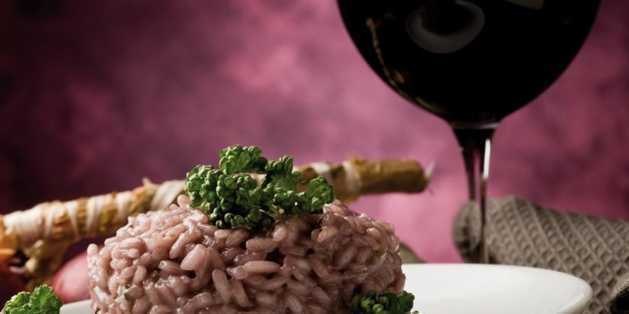

Risotto al Barolo - A Noble Risotto

Ingredients
- Carnaroli rice
- Barolo wine
- Meat stock
- Leeks
- Extra virgin oil
- Butter
- 1 alloro leaf
- Grated Grana Padano DOP
- Fine salt
Steps
-
Let's start by preparing the meat stock.
-
Meanwhile peel the leeks and remove the stalks:
now chop the vegetables into a very fine mixture.
-
Melt 30 g of butter with oil in a non-stick pan over a very low heat;
when the butter is completely melted, brown the spring onion while stirring continuously
to cook it evenly:
it will take about 6 minutes to let the spring onion almost completely "melted".
-
Toast the rice for 3 to 4 minutes stirring continuously.
Pour in the Barolo wine and,
when it has partially evaporated, add the stock: keep stirring to prevent the rice from sticking
to the bottom of the pan. Add a washed and dried bay leaf and season the risotto with fragrance.
-
Allow the stock to be absorbed and, each time the previous ladle of liquid has been absorbed,
add another ladle until the rice is cooked to perfection. This will take about 15-20 minutes.
Add salt to adjust the flavour of the risotto.
-
Finally, turn off the heat and remove the alloro leaf using kitchen tongs.
-
Add a glass of this elegant wine on the side and.. Buona degustazione!